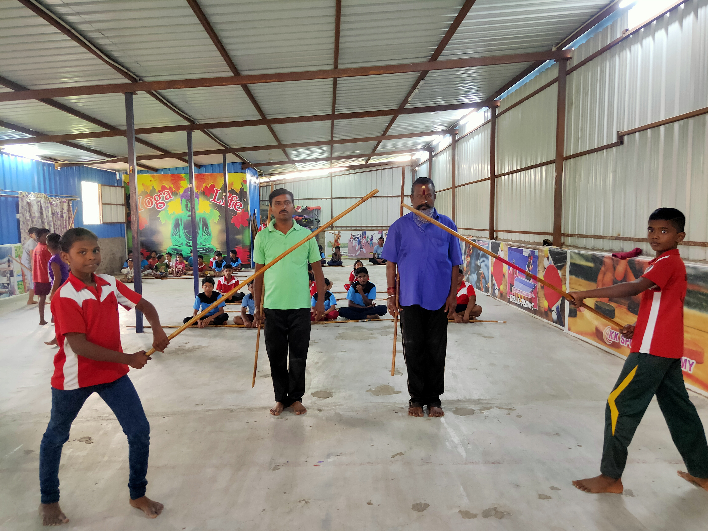
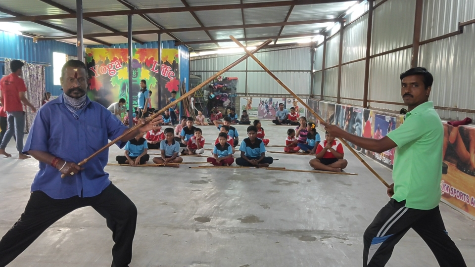

Silambam is a weapon-based Indian martial art from Tamil Nadu("Madurai"), but also traditionally practiced by the Tamil community of Sri Lanka and Malaysia...etc... It derives from the Tamil word silam meaning "hill" .
An Indian Traditional Martial Art In ancient days, pre historic man used a bamboo stick to protect himself from approaching animals and inimical humans. Because of its usefulness, they always had the stick with them.
When they went in search of food, they had to walk long distances. Playfully they swirled the sticks that they carried with them. As and when some inimical humans attacked them with sticks, they had to defend themselves with sticks.
The Exponents Are Using Eyebrow Level In Length And One Inch Width Bamboo Sticks.
They Swing The Stick In Various Methods To Defend And To Counter Attack The Opponent.
Even A Man With Knife May Easily Be Managed With This Long Stick.
This Is The Main Instrument In The Silambam Competition.
“Silambam Is Not Just About Twirling A ‘Stick’.
It Has Multiple Variations And It Takes Close To Two Years To Master The Basics,”.
It Is Basically Used At The Starting Level To Protect From The Opposite Member.
Using This Long Stick There Are Lot Of Tricks Which Is Used By The Art Of Silamabam.
This Is The Main Instrument Used In The Various Form Of Defence Easily Comparing To The Other Instruments.
Two Short Sticks, Each About 3 Feet In Length May Be Used.
A Skilled Exponent Can Guard Himself Against Several Hits, Where He Uses One Hand To Block And The Other To Counter- Strike Or Thrust.
Usually Two Short Sticks Are Better Than One.
The Exponents With High Skills Can Attack Or Strike And At The Same Time Giving No Time For The Opponent To Defend.
Please Note That Swaying The Stick And Turning The Body Left And Right Will Make The Opponent Sometimes Defenseless.
This Is Used By An Two Player And As Well As The Single Player By Using Their Techniques.
Fighters Use This Weapon In Close Combat When Their Opponent Is Attacking With A Long Bladed Knife, Sword, Sedikuchi (Long Staff) Or Muchchaan (Short Staff).
A Highly Skilled Person In Martial Art Only Can Defend Himself From Various Weapons Ike A Chopper, Sword, Knife Or An Axe.
He Should Move Or Dodge Immediately When The Exponent Attacks. He Can Either Give Blows, Kicks, Thrusts, Or Apply Locks
When Applying Ocks Like In Wrestling, One Can Make The Attacker With Weapon Motionless.
A Higher Form Of Echniques Should Be Learnt Before Using It Because It Needs Quick And Decisive Movement To Apply Locks Against The Opponent.
With A Sword And Shield One Can Give Strike, Hits, Thrusts, Swings To The Various Parts Of The Body Of The Opponent.
The Defender Must Be Skillful In Order To Defend From Various Strikes
This Is Usually A Fight Against Warriors; Where They Attack With A Long Sword And Defend With A Shield.
In Ancient War, The Sword And Shield Are Commonly Used By Most Of The Countries Like Rome, India, China, Etc.
Spear Fighting / Spear Swing: Spear Fighting Techniques Is Rather Similar To Long Pole Fighting But The Techniques Used Here Are Mostly Thrusts.
It Is A Short Defending Weapon Usually Made Of Deer Horns.
Since The Horns Are Very Rare To Get, The Players Usually Use The Weapon Made Of Hard Wood Or Soft Iron Bar.
The Exponents With A Single Maduvu Or Double Can Defend Him Against All Chops, Strikes And Hits.
A Very Skilled Person Will Be Able To Defend And Counter. Usually In India, Maduvu Will Be Played With Long Stick Called "Puliattam" Where A Man Wears A Costume Like A Tiger And Defends Against A Single Or Double Attacker.The Madu Is A Primarily Defensive Weapon, Favoring A Low Stance In Which The Wielder Strives To Stay Lower Than Their Opponent.
This Helps Protect The Body's Vital Points. Various Stances Are Based On Animal Movements, Such As The Frog, Snake, Mouse, Tiger, Elephant, And Eagle Forms.
There Are More Than 100 Types Of Techniques In Short/Long Stick Sparring.
Mostly The Techniques Are Of Strikes, Thrust Locks. It's An Ancient Weapon-Based Martial Art.
Silambam Is A Popular Variant Of Martial Arts Which Is Performed With The Aid Of Some Specific Weapons, Primarily With Bamboo Sticks.The Game Is Usually Played On An Even Hard Surface Where The Players Use A Bamboo Stick With Its Length Equivalent To Their Heights.
Overall, There Are 16 Forms Of Footwork Present In This Martial Art.
Performance In Front Of An Audience Typically Begins With Simultaneous Attacks By The Fighters To Demonstrate Defensive Skills, Agility, And Bravery .
The Fight End When One Participant Locks Or Disarms Their Opponent With A Final Move Which Prevents The Opponent From Evading.
Accuracy, Timing, And Defensive Abilities Are Key Considerations When Judging A Fighter's Skills.
The Steel-Whip Is A Weapon Consisting Of Two To Five Stainless -Steel Blades Riveted To A Handle Grip.
The Width Of Each Blade Is 1. 1\4 Inches And Each Blade Are 4 To 5 Feet In Length.
This Weapon Is Used To Combat Against A Mob Or To Disburse An Unruly Crowd.
Usually The Steel-Whip Displays Are Shown During Festival Season And Celebration Nights.
The Chain Whip Is A Weapon Used In Some Chinese Martial Arts, Particularly Traditional Chinese Disciplines, In Addition To Modern And Traditional Wushu.
It Consists Of Several Metal Rods, Which Are Joined End-To-End By Rings To Form A Flexible Chain.
Generally, The Whip Has A Handle At One End And A Metal Dart, Used For Slashing Or Piercing An Opponent, At The Other.
A Cloth Flag Is Often Attached At Or Near The Dart End Of The Whip And A Second Flag May Cover The Whip's Handle.
The Flag Or Flags Adds Visual Appeal And Produces A Rushing Sound As The Whip Swings Through The Air. The Rushing Noise Also Helps The User With Identifying The Location Of The Other End, Since The Weapon Moves Too Fast To Be Normally Noticed By Human Eyes.
The Saber Sword Is A Weapon Consisting Of Single Steel Blade Riveted With Handle Grip.
The Length Of The Weapon Is 3 Feet. This Event Is Used For Group Event.
Though Single-Edged Cutting Swords Already Existed In The Ancient World, Such As The Ancient Egyptian And Sumerian Sickle Swords, These (Usually Forward Instead Of Backward Curving) Weapons Were Chopping Weapons For Foot Soldiers.
This Type Of Weapon Developed Into Such Heavy Chopping Weapons As The Greek Machaira And Anatolian Drepanon, And It Still Survives As The Heavy Kukri Chopping Knife Of The Gurkhas.
| Do's | Dont's |
|---|---|
| You can attack the thighs and above the wrist in hand of the body. | You can’t attack below the wrist and the kneeling leg of the body. |
| You can attack the back and front of the body. | You can’t attack head, neck , fingers and joints of the body. |

Attacking in the head
Attacking in the head is strictly prohibited in the game.
When the player 1 attacks the player 2 in the head, then it is considered as foul.
The player 1 will lose one point.
When the player 1 hits 3 times on the head, then the player 1 will gets dis-qualified

Attacking in the back
The player hitting in the backside of the body is allowed
When the player 1 hits the stick in the backside of the body of player 2 then player 1 will gain one point.
When the player 1 hits 3 times on the backside continuously, then the player 1 gets the bonus points.
Attacking in the fingers
Attacking in the fingers is strictly prohibited in the game
When the player 1 attacks the player 2 in the fingers, then it is considered as foul
The player 1 will lose one point
When the player 1 hits 3 times on the fingers, then the player 1 will gets dis-qualified


.jpg)
.jpg)